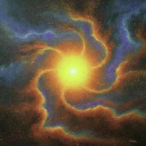
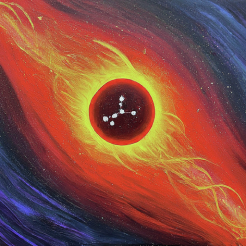

*Hover to see who has these Virgo Placements*
Sun in Virgo individuals are analytical and practical, often focusing on details and organization.
People with Moon in Virgo often have a need for order and can be very critical of themselves and others.


Mercury in Virgo is known for precise communication and a keen intellect.


Individuals with Venus in Virgo tend to be practical and analytical in love.

Mars in Virgo signifies a meticulous approach to taking action, focusing on details.

Jupiter in Virgo encourages growth through practicality and attention to detail.

Those with Saturn in Virgo often have a disciplined approach to work and responsibility.

Uranus in Virgo brings innovative thinking to work and health-related issues.

Neptune in Virgo can indicate a dreamy approach to service and health.

Individuals with Pluto in Virgo often undergo transformations related to work and health.

Virgo Rising individuals are often seen as detail-oriented and practical in their approach to life.